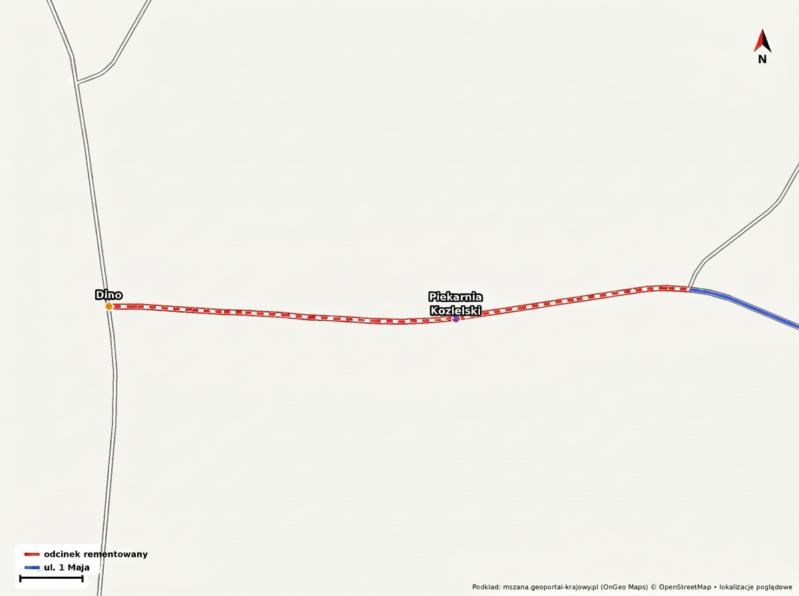

Gmina Mszana
Gmina Mszana
🚜 Co dalej z remontem ul. 1 Maja w Mszanie? Sprawdzamy najnowsze informacje z sesji Rady Gminy! 🚧
Podczas ostatniej XXVII Sesji Rady Gminy Mszana (27 lipca 2026 r.) jednym z kluczowych tematów poruszanych w części wolnych wniosków był stan zaawansowania prac na ulicy 1 Maja. Na pytania radnych szczegółowych wyjaśnień udzielał Wicewójt Błażej Tatarczyk.
Oto najważniejsze ustalenia i konkrety dla mieszkańców oraz kierowców:
📅 1. Prace zgodnie z harmonogramem i kluczowa data: 1 września
Wicewójt zapewnił, że cała inwestycja przebiega zgodnie z przyjętym harmonogramem. Najtrudniejszym i najbardziej wymagającym elementem technologicznym jest obecnie budowa nowego przepustu drogowego w ciągu ulicy.
🚗 2. Odcinek od Dino do Piekarnia Kozielski – uwaga kierowcy!
Na odcinku pomiędzy marketem Dino a Piekarnia Kozielski prace budowlane idą pełną parą, co wiąże się z poważnymi utrudnieniami i zwężeniami w ruchu.

🌿 3. Płyty ażurowe na skarpach – dlaczego tak to wygląda?
Podczas obrad wyjaśniono również kwestię skarp przy ul. 1 Maja, które zostały wyłożone betonowymi płytami ażurowymi:
⏱️ Chcesz posłuchać dyskusji na własne uszy?
Wątek remontu ul. 1 Maja pojawił się w nagraniu z sesji w trzech momentach (zaznacz na suwaku odtwarzacza eSesja):
🎥 Pełne nagranie wideo z sesji znajdziesz na portalu eSesja.tv:
▶ Obejrzyj nagranie sesji na eSesja.tv